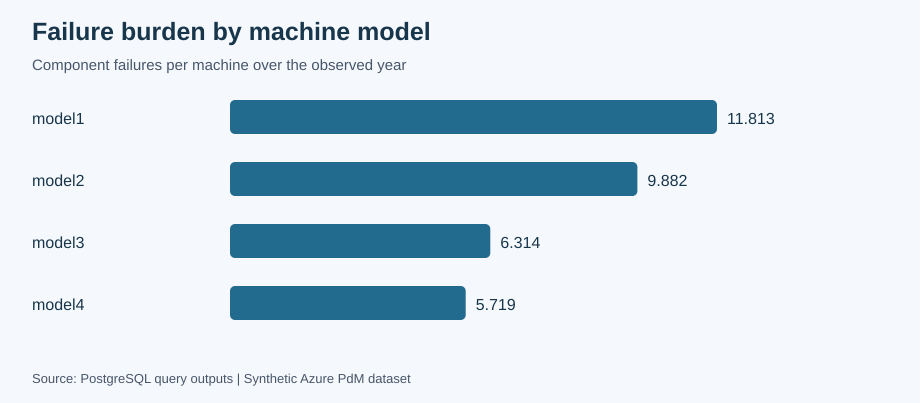
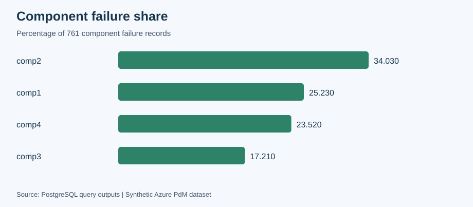
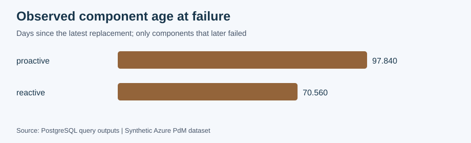

Azure Predictive Maintenance
SQL Reliability Analytics
Ozan Berk Aydin · PostgreSQL 16 · Intermediate SQL · Verified 3 October 2026
Retrospective analysis of a synthetic dataset: 100 machines, 876,100 telemetry readings and 761 component failure records. Results describe associations, not causal effects or validated predictions.
Project documentation · SQL analysis



Data Quality Summary
| metric | value |
|---|---|
| machines | 100 |
| telemetry_rows | 876100 |
| error_rows | 3919 |
| maintenance_rows | 3286 |
| failure_rows | 761 |
| telemetry_start | 2015-01-01 06:00:00 |
| telemetry_end | 2016-01-01 06:00:00 |
| maintenance_before_telemetry | 400 |
| off_grid_readings | 0 |
| machines_with_missing_hours | 0 |
Model Failure Rates
| model | machine_count | failure_count | failures_per_machine |
|---|---|---|---|
| model1 | 16 | 189 | 11.813 |
| model2 | 17 | 168 | 9.882 |
| model3 | 35 | 221 | 6.314 |
| model4 | 32 | 183 | 5.719 |
Component Failure Share
| component | failure_count | failure_pct |
|---|---|---|
| comp2 | 259 | 34.03 |
| comp1 | 192 | 25.23 |
| comp4 | 179 | 23.52 |
| comp3 | 131 | 17.21 |
Reliability Summary
| component_failure_rows | distinct_failure_events | complete_event_intervals | fleet_event_mtbf_hours | failure_free_machines |
|---|---|---|---|---|
| 761 | 719 | 621 | 1107.29 | 2 |
Machine Mtbf
| machine_id | complete_intervals | mtbf_hours |
|---|---|---|
| 1 | 6 | 1380.00 |
| 2 | 2 | 3420.00 |
| 3 | 4 | 1980.00 |
| 4 | 5 | 1296.00 |
| 5 | 6 | 1260.00 |
| 7 | 8 | 990.00 |
| 8 | 4 | 1350.00 |
| 9 | 8 | 855.00 |
| 10 | 4 | 900.00 |
| 11 | 4 | 1980.00 |
| 12 | 4 | 1620.00 |
| 13 | 9 | 680.00 |
| 14 | 3 | 1440.00 |
| 15 | 4 | 2070.00 |
| 16 | 10 | 792.30 |
| 17 | 12 | 718.25 |
| 18 | 7 | 925.71 |
| 19 | 6 | 1320.00 |
| 20 | 12 | 720.00 |
| 21 | 9 | 880.00 |
| 22 | 12 | 640.25 |
| 23 | 11 | 752.73 |
| 24 | 9 | 880.00 |
| 25 | 5 | 1296.00 |
| 26 | 5 | 1080.00 |
| 27 | 2 | 540.00 |
| 28 | 4 | 1710.00 |
| 29 | 1 | 6480.00 |
| 30 | 3 | 2640.00 |
| 31 | 5 | 1152.00 |
| 32 | 8 | 900.00 |
| 33 | 7 | 1028.57 |
| 34 | 2 | 2520.00 |
| 35 | 9 | 691.00 |
| 36 | 3 | 1560.00 |
| 37 | 13 | 636.92 |
| 38 | 5 | 1584.00 |
| 39 | 3 | 2160.00 |
| 40 | 8 | 1035.00 |
| 41 | 2 | 3240.00 |
| 42 | 8 | 990.00 |
| 43 | 9 | 760.00 |
| 44 | 3 | 1320.00 |
| 45 | 6 | 1220.50 |
| 46 | 1 | 6480.00 |
| 47 | 9 | 880.00 |
| 48 | 6 | 1200.00 |
| 49 | 10 | 720.00 |
| 50 | 3 | 2040.00 |
| 51 | 9 | 917.67 |
| 52 | 4 | 2070.00 |
| 53 | 5 | 1224.00 |
| 54 | 4 | 2070.00 |
| 55 | 7 | 925.71 |
| 56 | 9 | 952.33 |
| 57 | 1 | 6480.00 |
| 58 | 7 | 1179.86 |
| 59 | 7 | 987.86 |
| 60 | 3 | 1800.00 |
| 61 | 3 | 2160.00 |
| 62 | 6 | 1380.00 |
| 63 | 6 | 1140.00 |
| 64 | 7 | 1234.29 |
| 65 | 4 | 1080.00 |
| 66 | 3 | 2400.00 |
| 67 | 8 | 810.00 |
| 68 | 3 | 2040.00 |
| 69 | 9 | 800.00 |
| 70 | 4 | 1890.00 |
| 71 | 11 | 589.09 |
| 72 | 1 | 3960.00 |
| 73 | 11 | 720.27 |
| 74 | 5 | 1296.00 |
| 75 | 8 | 855.00 |
| 76 | 8 | 945.00 |
| 78 | 8 | 945.00 |
| 79 | 9 | 920.33 |
| 80 | 4 | 2046.75 |
| 81 | 7 | 1182.86 |
| 82 | 3 | 2520.00 |
| 83 | 11 | 783.55 |
| 84 | 6 | 1080.00 |
| 85 | 10 | 828.00 |
| 86 | 3 | 2569.00 |
| 87 | 8 | 1065.38 |
| 88 | 7 | 1182.86 |
| 89 | 6 | 1140.00 |
| 90 | 10 | 828.00 |
| 91 | 5 | 1296.00 |
| 92 | 7 | 977.14 |
| 93 | 5 | 504.00 |
| 94 | 9 | 936.33 |
| 95 | 8 | 945.00 |
| 96 | 4 | 1890.00 |
| 97 | 6 | 1200.00 |
| 98 | 13 | 553.85 |
| 99 | 18 | 461.50 |
| 100 | 2 | 3600.00 |
Maintenance Reactive Rates
| model | maintenance_count | reactive_count | reactive_ratio |
|---|---|---|---|
| model1 | 458 | 181 | 0.3952 |
| model2 | 485 | 165 | 0.3402 |
| model3 | 1032 | 216 | 0.2093 |
| model4 | 911 | 181 | 0.1987 |
Maintenance Observed Component Age
| previous_change_type | observed_failures | average_days_to_failure |
|---|---|---|
| proactive | 511 | 97.84 |
| reactive | 250 | 70.56 |
Error Window Sensitivity
| strict_leading_error_count | inclusive_error_count | same_timestamp_difference |
|---|---|---|
| 1177 | 1181 | 4 |
Error Lift Top10
| component | error_id | pre_failure_errors_per_day | baseline_errors_per_machine_day | lift |
|---|---|---|---|---|
| comp4 | error5 | 0.9888 | 0.009753 | 101.38 |
| comp3 | error4 | 0.9924 | 0.019918 | 49.82 |
| comp2 | error3 | 0.9961 | 0.022959 | 43.39 |
| comp2 | error2 | 1.0000 | 0.027068 | 36.94 |
| comp1 | error1 | 0.9792 | 0.027671 | 35.39 |
| comp2 | error5 | 0.0541 | 0.009753 | 5.54 |
| comp4 | error3 | 0.1173 | 0.022959 | 5.11 |
| comp3 | error5 | 0.0458 | 0.009753 | 4.70 |
| comp4 | error2 | 0.1061 | 0.027068 | 3.92 |
| comp1 | error5 | 0.0313 | 0.009753 | 3.20 |
Telemetry Pre Failure Percentage Changes
| component | failures_with_telemetry | volt_change_pct | rotate_change_pct | pressure_change_pct | vibration_change_pct |
|---|---|---|---|---|---|
| comp1 | 192 | 11.76 | -0.88 | 0.67 | 0.26 |
| comp2 | 259 | 0.28 | -17.39 | 0.68 | 0.99 |
| comp3 | 131 | 0.37 | -0.75 | 23.90 | 0.01 |
| comp4 | 179 | 0.09 | -1.17 | 0.21 | 24.42 |
Top Maintenance Priorities
| machine_id | model | age | n_failures | mtbf_hours | reactive_ratio | errors_per_day | priority_score | maintenance_priority |
|---|---|---|---|---|---|---|---|---|
| 99 | model1 | 14 | 19 | 461.50 | 0.6000 | 0.1479 | 26.48 | high |
| 98 | model2 | 20 | 16 | 553.85 | 0.4848 | 0.1233 | 22.08 | high |
| 22 | model1 | 14 | 15 | 640.25 | 0.4828 | 0.1644 | 21.47 | high |
| 17 | model1 | 14 | 15 | 718.25 | 0.5000 | 0.1342 | 21.34 | high |
| 37 | model1 | 16 | 14 | 636.92 | 0.4516 | 0.1178 | 19.69 | high |
| 83 | model4 | 18 | 14 | 783.55 | 0.4333 | 0.1205 | 19.54 | high |
| 20 | model2 | 16 | 13 | 720.00 | 0.4483 | 0.1288 | 18.77 | high |
| 71 | model2 | 18 | 13 | 589.09 | 0.4483 | 0.1233 | 18.72 | high |
| 13 | model1 | 15 | 13 | 680.00 | 0.4483 | 0.1151 | 18.63 | high |
| 16 | model1 | 3 | 13 | 792.30 | 0.4400 | 0.1123 | 18.52 | high |
Kpi Grain Validation
| machines_in_view | view_failure_sum | source_failure_count |
|---|---|---|
| 100 | 761 | 761 |
Definitions and limitations
MTBF uses distinct machine timestamps and complete observed intervals. Maintenance ratios exclude 400 replacements before telemetry starts; those historical replacements remain available for component-age calculations. Leading errors exclude the failure timestamp. Sensor changes compare pre-failure means with the machine’s full-period mean and are retrospective percentages, not standardized scores.
Observed component age includes failures with a known prior replacement and omits components still operating. It is not a survival estimate or time to the next failure after every replacement. Priority weights and thresholds are illustrative. Full-period baselines include future observations and must not be used directly in a forecasting model. The one-year synthetic dataset has no production validation.
The MIT license applies to code and documentation; source data remain subject to the dataset publisher’s terms.